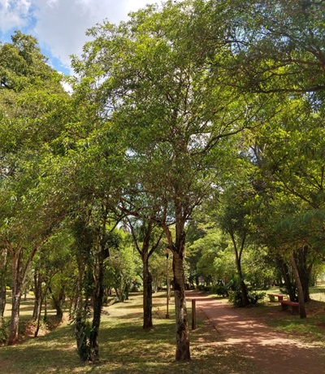

Importancia del Arbolado Urbano

El arbolado urbano es esencial por los siguientes motivos:
-
Mejora de la calidad del aire: Los árboles absorben dióxido de carbono y otros contaminantes del aire, contribuyendo a reducir la contaminación y mejorar la calidad del aire que respiramos.
-
Reducción del ruido: Los árboles actúan como barreras naturales que amortiguan el ruido del tráfico y otros sonidos urbanos, creando un entorno más tranquilo y agradable.
-
Promoción de la biodiversidad: Al proporcionar hábitats para una variedad de plantas y animales, los árboles contribuyen a fomentar la biodiversidad en entornos urbanos.
-
Regulación de la temperatura: A través de la sombra y la reducción de la evaporación, los árboles ayudan a mantener temperaturas más frescas en entornos urbanos.
-
Mejora estética: Embellecen el paisaje urbano, creando un entorno más agradable y mejorando la calidad de vida.
En resumen, el arbolado urbano es crucial para la salud, el bienestar y la calidad de vida de las personas que viven en las ciudades.
Beneficios Específicos del Arbolado Urbano:
-
Reducción del riesgo de enfermedades respiratorias: Al absorber contaminantes del aire, los árboles contribuyen a disminuir el riesgo de enfermedades respiratorias como el asma y la bronquitis.
-
Mejora del estado de ánimo: Las áreas con abundante arbolado están asociadas a un mejor estado de ánimo y bienestar general.
-
Reducción del estrés: Pasar tiempo en entornos naturales, como parques arbolados, puede reducir el estrés y mejorar la salud mental.
-
Estímulo de la actividad física: Los árboles pueden hacer que las calles y los parques sean más atractivos para caminar, andar en bicicleta o realizar actividades físicas.
Es crucial que las ciudades cuenten con planes de manejo del arbolado urbano para garantizar su adecuada plantación, cuidado y mantenimiento.
Cuidado del Arbolado Urbano:
Algunos consejos para el cuidado de los árboles incluyen:
-
Elección de especies adecuadas: Seleccionar especies apropiadas para el clima y las condiciones del suelo.
-
Riego adecuado: Proporcionar riego profundo y espaciado para permitir que las raíces absorban el agua de manera efectiva.
-
Fertilización: Suministrar nutrientes adecuados de acuerdo con las instrucciones del fabricante.
-
Poda adecuada: Realizar podas necesarias para mantener la salud y seguridad de los árboles.
-
Protección contra daños: Tomar medidas para proteger los árboles de daños causados por tráfico, animales y elementos.
Especialmente durante los primeros años:
-
Riego regular: Los árboles recién plantados requieren un riego más frecuente.
-
Desmalezado: Eliminar maleza alrededor de los árboles para evitar competencia por nutrientes y agua.
-
Protección contra animales: Emplear barreras o cercas para proteger los árboles de daños causados por animales.
Cuidar el arbolado urbano es responsabilidad de todos, garantizando así que continúen proporcionando beneficios a la salud y el bienestar de la comunidad durante muchos años.
Promoción del Arbolado Urbano:
Algunos consejos para promover el arbolado urbano incluyen:
-
Educación sobre beneficios: Informar a la población sobre los beneficios del arbolado urbano mediante campañas educativas.
-
Participación comunitaria: Involucrar a la comunidad en la planificación y cuidado del arbolado urbano mediante comités dedicados.
-
Incentivos para la plantación: Crear programas que ofrezcan incentivos para la plantación y cuidado de árboles.
-
Uso de especies adecuadas: Promover la elección de especies apropiadas para el entorno urbano a través de guías informativas.
Acciones Individuales:
-
Plantación de árboles: Plantar árboles en espacios disponibles en hogares o negocios.
-
Adopción de árboles: Participar en programas de adopción para el cuidado de árboles.
-
Voluntariado: Colaborar como voluntario en organizaciones dedicadas al cuidado de árboles.
-
Apoyo a políticas: Respaldar políticas que promuevan el manejo sostenible y el cuidado del arbolado urbano.
Al tomar medidas conjuntas, podemos contribuir a construir ciudades más saludables, sostenibles y agradables para vivir.